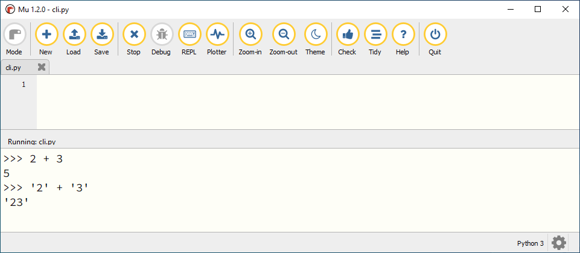
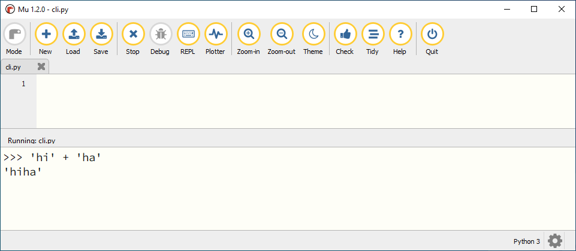
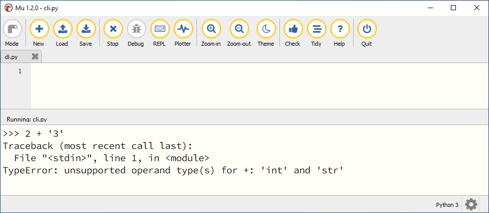
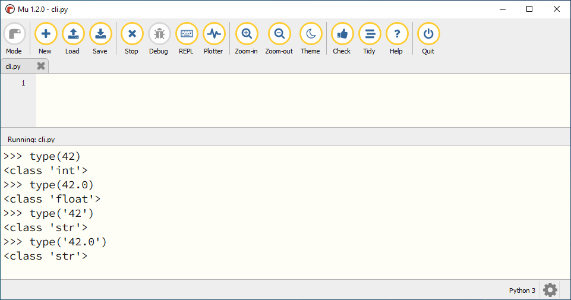
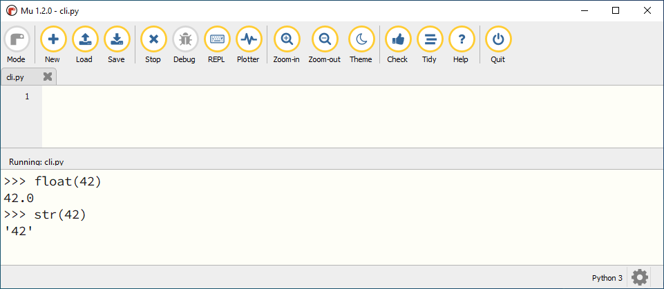

4. Datatypes#
In het Nederlands heeft het woord data twee betekenissen:
Meervoud van datum.
‘Er zijn twee data geschikt voor het feestje.’Gegevens, informatie.
‘De data wordt opgeslagen in de cloud.’
Bij computerprogrammeren gebruiken we data vrijwel altijd in de betekenis van gegevens, informatie. Voorbeelden van data waarmee computerprogramma’s werken zijn:
De nickname van een gebruiker.
De positie van een figuurtje in een game.
Het aantal seconden dat verstrijkt voordat een gebruiker een reclame kan wegklikken.
De geboortedatum van een gebruiker.
Het laatste voorbeeld laat zien dat een datum ook data kan zijn.
Wat leer je in dit hoofdstuk
Wat bedoelen we met een datatype.
Welke datatypes voor getallen en tekst zijn er in Python.
Hoe kun je het datatype van een waarde opvragen in Python.
Hoe kun je een waarde van het ene datatype naar het andere datatype converteren met type casting.
4.1. Getallen en tekst#
Probeer het volgende eens uit in de shell:
Wat geeft Python als antwoord terug op deze berekeningen?
Resultaat - pas openen nadat je het zelf hebt geprobeerd

Waarden die tussen aanhalingstekens staan, herkent Python als tekst. Aanhalingstekens kwam je eerder tegen in het Hello, World! programma:
print('Hello, World!')
In de code '2' + '3' behandelt Python de waarden 2 en 3 dus niet als getallen, maar als tekst. En je zag dat het optellen van tekst een ander resultaat geeft dan het optellen van getallen; Python plakt de tekst aan elkaar:

Wat zou er gebeuren als je probeert een getalswaarde bij een tekstwaarde op te tellen, bijvoorbeeld 2 + '3' ? De beste manier om daar achter te komen is het gewoon te proberen:

Python geeft een foutmelding: TypeError: unsupported operand type(s) for +: 'int' and 'str'. Omdat het type van de eerste waarde (getal) niet overeenkomt met het type van de tweede waarde (tekst), kan Python de optelling niet uitvoeren en meldt een TypeError.
4.2. Integer, float en string#
Met getallen kun je andere dingen doen dan met tekst. Getallen en tekst zijn twee verschillende soorten data. Zelfs getallen onderling kunnen van een verschillend type zijn. Met de functie type() kun je in Python het datatype van een waarde opvragen. Typ de volgende regels maar eens in de shell en bekijk het resultaat.
Resultaat - pas openen nadat je het zelf hebt geprobeerd

Python kan werken met een grote verscheidenheid aan datatypes, maar vooralsnog beschouwen we de volgende drie:
Datatype |
Naam |
Waarde |
|---|---|---|
int |
integer |
geheel getal |
float |
floating point number |
getal met decimalen |
str |
string |
tekst |
Je ziet dat Python twee soorten getallen onderscheidt: gehele getallen en kommagetallen. De eerste heten in Python integers en de laatste floats. En je hebt vast al opgemerkt dat je kommagetallen in Python niet met een komma schrijft, maar met een punt: 42.0.
4.3. Resultaten van Berekeningen#
In het hoofdstuk ../ch01_arithmetic/ch01_01_arithmetic zag je dat de berekening 345 / 23 het resultaat 15.0 opleverde.
Blijkbaar levert een deling van twee integers in Python altijd een float op, zelfs als de uitkomst eigenlijk een mooi rond getal is. Je kunt de geheeltallige deling // gebruiken om een (naar beneden afgeronde) integer te krijgen:
Hoe zit het met de datatypes bij andere berekeningen zoals optellen, aftrekken en vermenigvuldigen? Wanneer je twee integers optelt, is het resultaat ook een integer. Maar wanneer je een integer en een float optelt, is het resultaat een float.
Berekening |
Resultaat |
|---|---|
|
|
|
|
|
|
Probeer zelf eens te bedenken waarom dat zo is, en hoe het werkt bij aftrekken en vermenigvuldigen.
4.4. Type casting#
Helaas is de data waarmee een computerprogramma moet werken niet altijd meteen van het juiste type. Soms ontvangt je code (van de gebruiker of vanuit andere code) een stringwaarde terwijl je een integer nodig hebt. Of er komt een float binnen terwijl je juist een string had willen hebben. In dat geval is het handig als je de waarde kunt converteren naar een ander datatype. Dat noemen we type casting.
Voor de datatypes int, float en str heeft Python de type casting functies int(), float() en str().

In bovenstaand voorbeeld zie je dat float(42) de floating point versie teruggeeft van de integer 42. Net zo geeft str(42) de string '42' terug.
4.5. Opdrachten#
Opdracht 01
Probeer het resultaat te voorspellen van de volgende type() aanroepen, en check vervolgens je voorspelling in de shell.
type('Hello, World!')type(12345)type(3.1415927)type('1.618')
Opdracht 02
In plaats van één waarde, kun je tussen de haakjes bij type() ook een berekening typen. Bijvoorbeeld type(2 + 3). Python geeft dan het datatype van het resultaat van de berekening.
Probeer te voorspellen hoe Python reageert op de volgende type() aanroepen, en check vervolgens je voorspelling in de shell. Kun je de verschillen verklaren tussen de resulterende datatypen van de vijf berekeningen?
type(12 + 3)type(12 + 3.0)type(12 * 3)type(12 / 3)type(12 // 3)
Opdracht 03
Type casting werkt alleen als Python de ingevoerde waarde logisch kan omzetten naar een ander datatype. Wanneer dat niet kan, krijg je een foutmelding. Probeer in de shell de onderstaande type casts uit te voeren en bedenk van tevoren of het zal werken.
de float
42.0naar een integer.de float
42.0naar een string.de string
'42.0'naar een float.de string
'42.0'naar een integer.de string
'42'naar een float.de string
'42'naar een integer.de string
'Hello, World!'naar een integer.de string
'Hello, World!'naar een float.
4.6. Antwoorden#
Antwoord opdracht 01
string (
<class 'str'>)integer (
<class 'int'>)float (
<class 'float'>)string (
<class 'str'>)
Antwoord opdracht 02
integer (
<class 'int'>)float (
<class 'float'>)integer (
<class 'int'>)float (
<class 'float'>)integer (
<class 'int'>)
Antwoord opdracht 03
int(42.0)levert42str(42.0)levert'42.0'float('42.0')levert42.0int('42.0')levertValueErrorfloat('42')levert42.0int('42')levert42int('Hello, World!')levertValueErrorfloat('Hello, World!')levertValueError